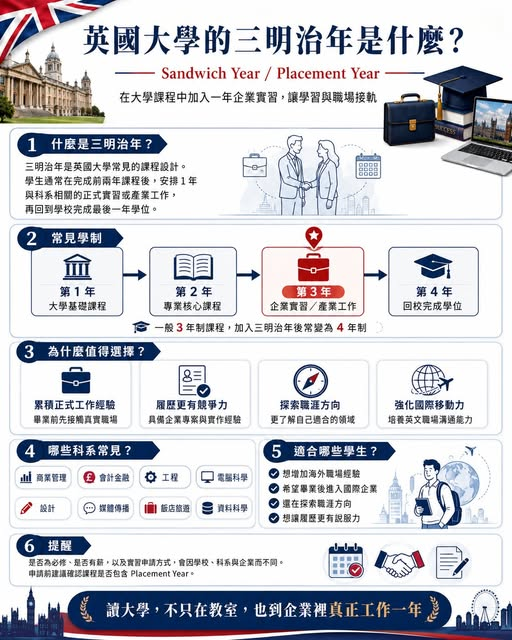

《看懂制度，選對世界》第一集
英國大學的三明治年 Sandwich Year 是什麼？
【英國大學的「 讀大學，不只在教室，也到企業裡真正工作一年 英國大學的 Sandwich Year，是英國大學很有特色的一種學制：學生在大學課程中間，安排一段正式的企業實習或產業工作，所以被稱為「三明治年」。

【英國大學的「 讀大學，不只在教室，也到企業裡真正工作一年 英國大學的 Sandwich Year，是英國大學很有特色的一種學制：學生在大學課程中間，安排一段正式的企業實習或產業工作，所以被稱為「三明治年」。
簡單來說，英國一般大學本科多為三年制；如果選擇含有 Sandwich Year 的課程，通常會變成四年： 第一年：大學基礎課程 第二年：專業核心課程 第三年：企業實習／產業工作年 第四年：回到大學完成最後一年學位 這個實習年通常也被稱為 Placement Year、Year in Industry 或 Work Placement。英國 Prospects 說明，這類工作實習通常是學位的一部分，常安排在大二與最後一年之間；部分課程為必修，部分則為選修。為什麼叫「三明治年」？
因為學生的學習歷程像三明治一樣： 上層是大學課程， 中間夾著一年的產業實習， 下層再回到大學完成學位。這一年不是單純打工，也不是暑期短期見習，而是與所讀科系相關的正式工作經驗。例如： 讀商科的學生，可能到企業做行銷、財務、專案助理。讀工程的學生，可能進入製造、能源、航太、科技公司。讀設計的學生，可能到品牌、建築、媒體或產品設計團隊。讀資訊的學生，可能到軟體公司、資料分析團隊或金融科技部門。UCAS 上不少英國大學課程會直接標示 with Sandwich Placement，學制也常顯示為四年制本科課程。
Sandwich Year 的價值就在於，它把工作經驗放進大學學制裡。學生還沒畢業，就已經有機會在英國或國際企業中工作一段時間，了解職場文化、專業分工、主管期待與產業運作方式。British Council 的 Study UK 也提到，許多英國學位會包含 work placements，幫助學生建立學術能力，也取得真實世界的經驗。２、讓履歷更有說服力 對未來求職或申請研究所來說，Sandwich Year 是很有份量的經歷。
履歷上若能寫出： 曾在英國企業實習一年 參與過真實專案 熟悉專業領域工作流程 能與國際團隊合作 具備英文職場溝通經驗 這些內容會比單純列出修過哪些課，更容易讓雇主或研究所看到學生的能力。３、幫助學生確認未來方向 很多高中生選科系時，其實還沒真正了解那個產業。讀商科，不一定知道自己適合行銷、財務、人資或供應鏈。讀工程，不一定知道自己喜歡研發、製造、顧問還是專案管理。讀設計，不一定知道自己適合品牌、空間、產品還是數位介面。Sandwich Year 給學生一段很寶貴的試探期。
透過一整年的工作，學生會更知道自己喜歡什麼，也會知道自己還需要補強什麼。三明治年通常有薪水嗎？很多 Sandwich Year 是有薪實習，但薪資高低會依產業、公司、地點與職務而不同。Prospects 說明，work placement 是學位中的一段暫時性工作經驗，學生可藉此取得與科系相關的產業經驗；是否有薪、薪資多少，仍需看實際職缺與雇主條件。對國際學生來說，也要留意簽證、課程規定、學校審核與實習安排方式。
選校時建議確認該課程是否正式包含 Placement Year，以及學校是否有職涯中心、企業合作資源與實習申請輔導。哪些科系常見三明治年？英國大學中，以下科系很常見 Sandwich Year 或 Placement Year 設計： 商業管理 會計與金融 行銷與品牌管理 工程 電腦科學 資料科學 人工智慧 建築與設計 媒體與傳播 飯店與旅遊管理 心理學 生物科技 運動科學 尤其是重視實務能力、企業經驗與作品集的科系，Sandwich Year 的加分效果通常更明顯。適合哪些學生？
英國大學三明治年特別適合這幾類學生： 想增加海外職場經驗的學生 希望畢業後留英或進入國際企業的學生 還在探索職涯方向的學生 想讓履歷更有競爭力的學生 喜歡實作勝過純考試的學生 未來想申請研究所或企業培訓計畫的學生 對台灣學生來說，這是一個很值得介紹的英國大學特色。因為它不只是讀書，也讓學生有機會把課堂知識轉成職場能力。